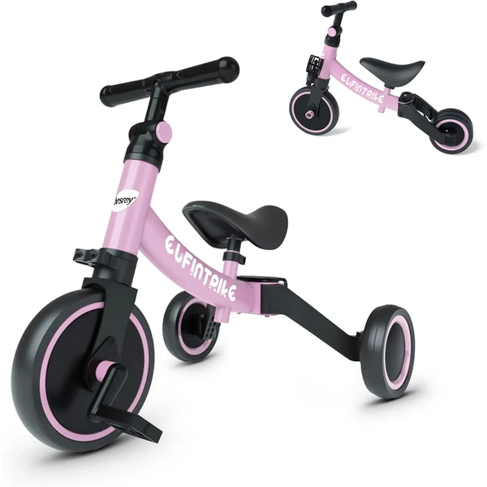
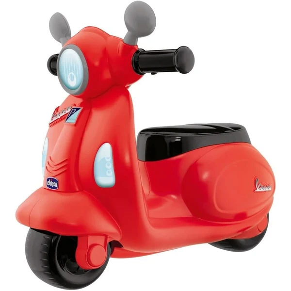
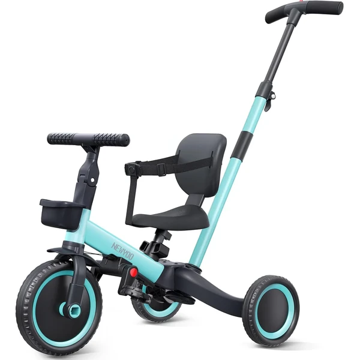
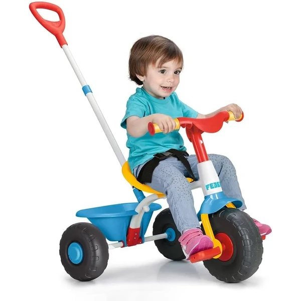
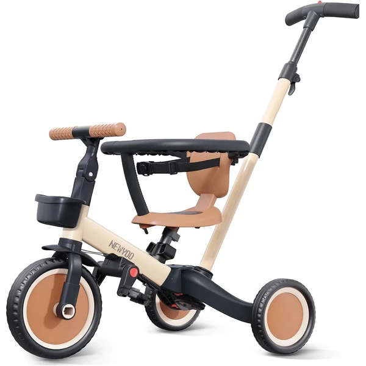
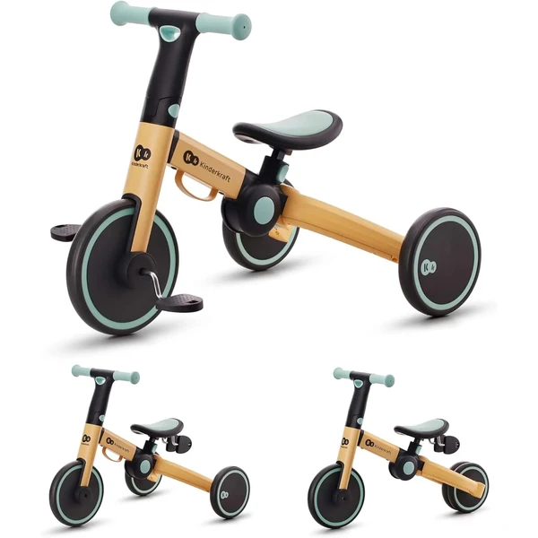

👶 1 año
Correpasillos
Primeros pasos sobre ruedas
Los correpasillos son uno de los primeros vehículos con los que el niño se desplaza por sí mismo, ideales a partir del año, cuando ya camina o está a punto de hacerlo. Sin pedales ni cadenas, se impulsa con los pies, lo que le ayuda a ganar equilibrio antes de pasar a un triciclo o una bici. Son estables, fáciles de manejar y muy resistentes. En esta selección encontrarás correpasillos pensados para esta edad.

Triciclo evolutivo 5 en 1 besrey
Un triciclo que cambia de modo con un solo botón: triciclo de pedales, andador sin pedales o bicicleta de equilibrio, entre otros. El asiento y el manillar se ajustan para acompañar al niño según crece.
⭐ ¿Por qué nos gusta?
- ✔ Cinco modos de uso en un solo triciclo.
- ✔ Asiento y manillar ajustables.
- ✔ Diseño curvo sin ángulos agudos.
💬 Lo que más destacan las familias
Entre los comentarios más habituales aparece lo práctico que resulta poder cambiar de modo según va creciendo el niño, sin tener que comprar otro correpasillos después. El diseño curvo y sin ángulos también da tranquilidad cuando empiezan a andar con más soltura.
Ver en Amazon

Moto correpasillos Vespa Primavera Chicco
Una moto correpasillos con el diseño de la Vespa Primavera, panel electrónico con luces y sonidos realistas, y ruedines estabilizadores extraíbles. Pensada para crecer con el niño, desde los primeros pasos hasta que gane equilibrio.
⭐ ¿Por qué nos gusta?
- ✔ Ruedines extraíbles según la etapa.
- ✔ Panel con luces y sonidos realistas.
- ✔ Pensada específicamente desde los 12 meses.
💬 Lo que más destacan las familias
No es raro encontrar comentarios sobre lo mucho que llama la atención el diseño de la Vespa, con las luces y sonidos que hacen que los niños quieran subirse una y otra vez. Los ruedines extraíbles se valoran porque permiten alargar su uso a medida que ganan equilibrio.
Ver en Amazon

Triciclo evolutivo 5 en 1 newyoo azul
Un triciclo con barra de empuje para los padres y cinco modos de uso que se adaptan a cada etapa, con asiento ajustable, cinturón de seguridad y respaldo extraíble.
⭐ ¿Por qué nos gusta?
- ✔ Cinco modos de uso distintos.
- ✔ Barra de empuje para guiarlo los padres.
- ✔ Cinturón de seguridad y respaldo extraíble.
💬 Lo que más destacan las familias
Se repite bastante el comentario de que la barra de empuje es de gran ayuda en los primeros paseos, cuando el niño todavía no pedalea solo. El cinturón de seguridad también tranquiliza a los padres durante esos primeros trayectos.
Ver en Amazon

Triciclo Baby Trike FEBER
Un triciclo ligero con estructura metálica, cinturón de seguridad y dos posiciones: sillita de empuje para los más pequeños y triciclo con pedales para cuando estén listos.
⭐ ¿Por qué nos gusta?
- ✔ Dos posiciones: empuje y pedales.
- ✔ Estructura metálica con cinturón de seguridad.
- ✔ Ligero y compacto para guardar.
💬 Lo que más destacan las familias
Un detalle que aparece una y otra vez es lo fácil que resulta pasar de la sillita de empuje a los pedales sin necesidad de cambiar de triciclo. También se agradece lo ligero que es a la hora de subirlo y bajarlo del coche.
Ver en Amazon

Triciclo evolutivo 5 en 1 newyoo caqui
La misma propuesta 5 en 1 de newyoo, en un acabado en color caqui. Acompaña al niño desde el triciclo deslizante hasta el paseo independiente con pedales.
⭐ ¿Por qué nos gusta?
- ✔ Cinco modos de uso distintos.
- ✔ Barra de empuje para guiarlo los padres.
- ✔ Diseño plegable, ahorra espacio.
💬 Lo que más destacan las familias
Quienes lo han probado destacan que el diseño plegable ahorra bastante espacio en casa cuando no se está usando. Por lo demás, gusta por las mismas razones que la versión azul: acompaña bien varias etapas del crecimiento.
Ver en Amazon

Triciclo plegable 3 en 1 Kinderkraft
Un triciclo plegable que combina andador de tres ruedas, minibicicleta de equilibrio y triciclo con pedales, con giro del manillar limitado por seguridad y montaje ligero en aluminio.
⭐ ¿Por qué nos gusta?
- ✔ Tres funciones en un mismo triciclo.
- ✔ Giro del manillar limitado por seguridad.
- ✔ Plegable y ligero para transportar.
💬 Lo que más destacan las familias
Los compradores valoran especialmente el giro limitado del manillar, que evita que el triciclo se vuelque en las primeras salidas. También se destaca lo compacto que queda plegado, ideal para guardarlo o llevarlo de viaje.
Ver en Amazon